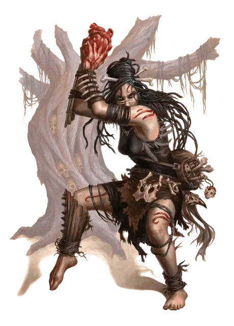

Утгардский шаман
Uthgardt Shaman
Средний Гуманоид (Человек), нейтрально-злой

Класс Доспеха 13 (шкурная броня)
Хиты 38 (7к8 + 7)
Скорость 30 футов
| мод | спас | ||
|---|---|---|---|
| СИЛ | 14 | +2 | +2 |
| ЛОВ | 12 | +1 | +1 |
| ТЕЛ | 13 | +1 | +1 |
| мод | спас | ||
|---|---|---|---|
| ИНТ | 10 | +0 | +0 |
| МДР | 15 | +2 | +2 |
| ХАР | 12 | +1 | +1 |
Навыки Восприятие +4, Выживание +6, Медицина +4, Природа +4
Чувства пассивное Восприятие 14
Языки Общий, Бохти
Опасность 2 (450 опыта)
Бонус мастерства +2
Особенности
Племенные заклинания утгардских шаманов. В зависимости от племени утгардского шамана, особенность «Использование заклинаний» шамана получает дополнительные заклинания, которые шаман может использовать один раз в день.
Племя Чёрного Льва:. восставший труп [animate dead], леденящее прикосновение [chill touch], притворная смерть [feign death], возрождение [revivify]
Племя Чёрного Ворона:. почтовое животное (только вороном [raven]) [animal messenger], падение пёрышком [feather fall], превращение (только в ворона [raven]) [polymorph]
Племя Синего Медведя:. улучшение характеристики (только «медвежья выносливость») [enhance ability], героизм [heroism]
Племя Лося:. поспешное отступление [expeditious retreat], поиск скакуна (только лось [elk]) [find steed], ускорение [haste]
Племя Серого Волка:. животные чувства (только с волком [wolf] и лютым волком [dire wolf]) [beast sense], лунный луч [moonbeam], разговор с животными (только с волком [wolf] или лютым волком [dire wolf]) [speak with animals]
Племя Великого Червя:. мантия крестоносца [crusader’s mantle], божественное благоволение [divine favor], гипнотический узор [hypnotic pattern]
Племя Гриффона:. падение пёрышком [feather fall], полёт [fly]
Племя Небесного Пони:. божественное благоволение [divine favor], падение пёрышком [feather fall], молния [lightning bolt]
Племя Красного Тигра:. животные чувства (только с тигром [tiger]) [beast sense], улучшение характеристики (только «кошачья ловкость») [enhance ability], прыжок [jump]
Племя Громового Зверя:. улучшение характеристики (только «бычья сила») [enhance ability], бесследное передвижение [pass without trace], каменная кожа [stoneskin]
Племя Дерева Духов:. дубовая кора [barkskin], искусство друидов [druidcraft], рост растений [plant growth], разговор с растениями [speak with plants]
Действия
Копьё. Рукопашная или дальнобойная атака оружием: +4 к попадению, досягаемость 5 фт. или дистанция 20/60 фт., одна цель. Попадание: 5 (1к6+2) колющего урона или 6 (1к8+2), если используется двумя руками для рукопашной атаки.
Короткий лук. Дальнобойная атака оружием: +3 к попаданию, дистанция 80/320 фт., одна цель. Попадание: 4 (1к6+1) колющего урона.
Использование заклинаний (требуется священный набор). Шаман накладывает одно из следующих заклинаний, Мудрость является его базовой характеристикой (Сл спасброска от заклинаний 12; +4 к попаданию заклинаниями):
• Неограниченно: пляшущие огоньки [dancing lights], волшебная рука [mage hand], сообщение [message], чудотворство [thaumaturgy]
• 1/день каждое: гадание [augury] (накладывается 1-м действием), проклятие [bestow curse], завеса стрел [cordon of arrows], обнаружение магии [detect magic], разговор с мёртвыми [speak with dead], духовные стражи [spirit guardians]
Описание
Утгардские варвары подозрительно относятся к большинству видов магии. Они редко принимают решение быть шаманами. Вместо этого, они навязывают эту роль рожденным с сильной связью с Миром духом. Быть шаманом, это значит выделятся в племени: одной ногой стоять на земле живых, другой на земле мертвых. Те кто идут темным путем между двумя мирами делают это потому, что духи мертвых взывают к ним. Остальные утгардцы боятся и уважают силу шаманов.
Утгардские шаманы обладают священным свертком для произнесения заклинаний. Священный сверток сделан из палок, костей, перьев, пучков меха и камней, «тронутыми» духами. Шаману требуется месяц, чтобы собрать священный сверток, и шаман может использовать одновременно только один такой сверток. Священный сверток помогает только шаману, создавшего его и не заменяет обычные компоненты для заклинаний.
В дополнению к заклинаниям, что умеют творить все утгардские шаманы, шаманы различных племен имеют дополнительные заклинания в зависимости от их принадлежности к племени (смотрите сноску «Племенные Заклинания Утгардских Шаманов»).
Общаясь с духами предков, утгардские шаманы также могут выучить секретные ритуалы. Эти ритуалы почти всегда требуют кровавую жертву, и их эффекты обычно касаются трансформации. Как пример, некоторые шаманы Чёрного Ворона знают ритуал, позволяющие им выращивать гигантских воронов из яиц обычных воронов, или некоторые шаманы Племени Грифона могут превращаться в грифонов через ритуал, который требует выпить огромное количество лошадиной крови.